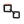

USER_APPROVAL_ICON005_20261019 已批准并接入 Visualizer。SVG 未重画。
figure-title
图标题。卡片里三条长短不同的文字线，没有图例圆点。frame
背景与尺寸。一个窗口加角上的尺寸线，不是 layout 的一大两小。export-settings
导出设置。页面里一支向上的箭头。range
范围与缩放。一条轴和两端括号，不是已批准的 axes。
source-link
来源框与引导线。两个框和一条连线，不是 inset 的放大窗口。